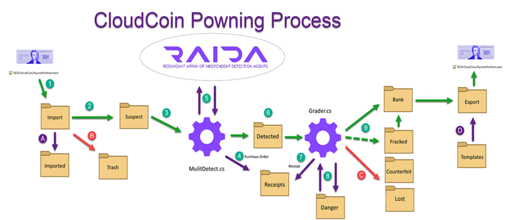

The purpose of the Directory Service API is to provide a backup system for a program (or user) to learn the names or IP addresses of the RAIDA servers so they can be contacted. The Directory Service may provide the RAIDA contact information in a different (and yet uninvented) format if convenient to the application. In other words, a separate, non-JSON service could easily be created. A dynamic RAIDA Directory is planned for the future but may not be necessary for years. THE DIRECTORY SERVICE HAS YET TO BE IMPLEMENTED.
For network 1, the default locations that can be tried first, before accessing the directory. The names are case insensitive. are:
https://RAIDA0.CloudCoin.Global
https://RAIDA0.CloudCoin.Global
...https://RAIDA0.CloudCoin.Global
https://RAIDA0.CloudCoin.Global
For future networks (should network multiplication occur) the names of the servers will have a default names such as RAIDA0_Net2 through RAIDA24_Net2 where Net2 means they are on network 2.
https://RAIDA0.CloudCoin.Global
https://RAIDA0.CloudCoin.Global
...https://RAIDA0.CloudCoin.Global
https://RAIDA0.CloudCoin.Global
Client uses HTTPS to GET the directory page located on different servers. Note that directory uses extension-less urls.
//www.cloudcoin.global/servers.html
A test directgory can be found at:
//www.cloudcoin.co/servers.html
Server returns a JSON string that describes the URLs of the RAIDAs, the status, the milliseconds required to contact, and a port to use.
{
"networks":[
{"nn":1,
"raida":[
{"raida_index":0, "failsEcho":"false","failsDetect":"false","failsFix":"false","failsTicket":"false","location":"au",
"urls":[ {"url": "raida0.cloudcoin.global","port": 443,"milliseconds": 700} ]},
{"raida_index":1, "failsEcho":"false","failsDetect":"false","failsFix":"false","failsTicket":"false","location":"mk",
"urls":[ {"url": "raida1.cloudcoin.global","port": 443,"milliseconds": 700} ]},
//RAIDA 2 though 23 left out for space.
{"raida_index":24, "failsEcho":"false","failsDetect":"false","failsFix":"false","failsTicket":"false","location":"ca",
"urls":[ {"url": "raida24.cloudcoin.global","port": 443,"milliseconds": 700} ]}
]
},
{"nn":2,
"raida":[
{"raida_index":0, "failsEcho":"false","failsDetect":"false","failsFix":"false","failsTicket":"false","location":"au",
"urls":[ {"url": "raida0.srv.cloudcoin.digital","port": 443,"milliseconds": 700} ]},
{"raida_index":1, "failsEcho":"false","failsDetect":"false","failsFix":"false","failsTicket":"false","location":"au",
"urls":[ {"url": "raida1.srv.cloudcoin.digital","port": 443,"milliseconds": 700} ]},
//RAIDA 2 though 23 left out for space.
{"raida_index":24, "failsEcho":"false","failsDetect":"false","failsFix":"false","failsTicket":"false","location":"au",
"urls":[ {"url": "raida24.srv.cloudcoin.digital","port": 443,"milliseconds": 700} ]}
]
}
]
}
The Directory Service may not respond if it is unavailable.
It is possible to add backup - or secondary - RAIDA by adding items with the same "url" to the urls directory. Then, RAIDA with the smallest ms could be contacted first. The Directory may be cached in case it becomes unavailable or even hard-coded in an application as a backup for fault tolerance.
The values are case-insensitive and should be compared accordingly.
All the services use extension less urls but here we start with .html
Typically, the ms (milliseconds required to contact) and the status are to be determined by the client using the Echo Service.
The purpose of the echo API is to allow a program (or user) to establish that a RAIDA is ready to detect the authenticity of CloudCoins and how many milliseconds the contact requires.
The client sends the RAIDA an Echo Request and the RAIDA will respond with a Echo Response.
Client uses HTTPS and GET method for the echo url located in the service folder on the RAIDA server.
https://RAIDA0.CloudCoin.Global/service/echo
Server returns a Response Object using JSON that describes the name of the server, the status, a message, and a timestamp:
{
"server":"RAIDA0",
"status":"ready",
"message":"Execution Time (milliseconds) = 2.3751258850098",
"time":"2018-03-28 02:14:43"
}
Brief mode allows for the a shorter "ready" response. The RAIDA would only return one word. The hope is that it would use less bandwidth and may be faster.
Client uses HTTPS to GET the echo page located in the service file on the RAIDA server. An extra "b=t" is added on the end of the request. It means brief=true.
https://RAIDA0.CloudCoin.Global/service/echo?b=t
ready
The purpose of the Detect API is to allow the program or user to change the Authenticity Number in the RAIDA to a Proposed Authenticity Number so that ownership change of CloudCoin is possible.
The program sends the RAIDA server an HTTPS GET request including the NN (network number), SN (Serial Number), AN (Authenticity Number), PAN(Proposed Authenticity Number) and Denomination of the CloudCoin that is to change ownership. The SN and the Denomination are like the CloudCoin's username.The AN is like the CloudCoins' password. The PAN is like a new password.
https://RAIDA20.cloudcoin.global/service/detect?nn=1&sn=1&an=1836843d928347fb22c2142b49d772b5&pan=1836843d928347fb22c2142b49d772b5&denomination=1
Server returns a Response Object using JSON that describes the name of the server, the status, a message, and a time stamp.
{
"server":"RAIDA1",
"status":"pass",
"sn":"1",
"nn":"1",
"message":"Authentic:1 is an authentic 1-unit. Your Proposed Authenticity Number is now the new Authenticate Number. Update your file.",
"time":"2016-44-19 7:44:PM"
}
Note that the 1 after the word Authentic: is the serial number of the unit that was tested.
Detection Response Example If failed to authenticate:
{
"server":"RAIDA1",
"status":"fail",
"sn":"1",
"nn":"1",
"message":"Counterfeit: The unit failed to authenticate on this server. You may need to fix it on other servers.",
"time":"2016-44-19 7:44:PM"
}
Detection Response Example If failed because the denomination of the coin is not its real denomination (Someone is trying to falsify the denomination):
{"server":"RAIDA1","status":"fail","sn":"1","nn":"1""message":"Denomination: The item you are authenticating is a 250 units. However, the request was for a 25 units. Someone may be trying to pass you a money unit that is not of the true value ","time":"2016-11-21 9:11:PM"}
{"server":"RAIDA1","status":"error","message":"NN: The unit's network number was out of range or not on this server.","time":"2016-15-21 9:15:PM"}
{"server":"RAIDA1","status":"error","message":"SN: The unit's serial number was out of range.","time":"2016-15-21 9:15:PM"}
{"server":"RAIDA1","status":"error","message":"Denomination: The unit's Denomination was out of range.","time":"2016-04-21 9:04:PM"}
{"server":"RAIDA1","status":"error","message":"PAN: The unit's Proposed Authenticity Number was out of range.","time":"2016-06-21 9:06:PM"}
{"server":"RAIDA1","status":"error","message":"AN: The unit's Authenticity Number was out of range.","time":"2016-07-21 9:07:PM"}
The RAIDA responds with one word. A b=t is added to the GET request. Brief = True;
https://RAIDA20.cloudcoin.global/service/detect?nn=1&sn=1&an=1836843d928347fb22c2142b49d772b5&pan=1836843d928347fb22c2142b49d772b5&denomination=1&b=t
pass
NOTE: YOU WILL WANT TO USE THE FOUR-TRUSTED SERVER FIXING. The purpose of the Fix API is to allow the program or user to repair "fractured" CloudCoins. A fractured CloudCoin is a CloudCoin that has some RAIDA servers failing authenticity. The CloudCoin owners can request that the fractured server ask its trusted servers (Neighbors) to vouch for them. By default, each RAIDA requires three servers (but will change to four servers) to vouch for CloudCoin in order to self-repair. There are four combinations of servers that the each RAIDA will trust. They will trust the three "corner" RAIDA on any of their four corners. With the numbers arranged in a circle like a clock, and the RAIDA being repaired being zero, the three servers needed to trust are -1.-5.-6 OR +1, -4, -5 OR -1, +4, +5 OR +1, +5 and +6. RAIDA12, for example, will trust RAIDA11 AND RAIDA7 AND RAIDA6 together, OR the three other combinations of three servers. Note that the Administrator for each RAIDA can change the server that their RAIDA trusts.
The program or user that has the fractured CloudCoin will identify the fractured RAIDA's trusted servers.
Client makes a Ticket Request to trusted server triad (or in the future quad). Note that there are three separate requests going to three separate RAIDAs.
https://raida0.cloudcoin.global/service/get_ticket?nn=1&sn=16777005&toserver=1&an=7ac477841f5cce2889e4329a0e994ee3&pan=7ac477841f5cce2889e4329a0e994ee3&denomination=250
https://raida0.cloudcoin.global/service/get_ticket?nn=1&sn=16777005&toserver=1&an=7ac477841f5cce2889e4329a0e994ee3&pan=7ac477841f5cce2889e4329a0e994ee3&denomination=250
These Ticket Request are the same as the Detection Request except that they include a "toserver" parameters. The toserver parameter describes the RAIDA number that is to be repaired (0 through 24). This facilitates advanced encryption between the fractured RAIDA and the trusted RAIDA if it becomes necessary.
The client will receive a "ticket" from each RAIDA that authenticates the Ticket Request. The ticket is exactly 44 characters in length and is a random and secret hexadecimal number. By default, the RAIDA servers will only honor a ticket that is less than 15 seconds old, but this amount can be changed by each RAIDA Administrator.
Note that the "message" from the Ticket Response is not divided into subject and details when it returns a ticket.
Example Ticket: 23a399c5358fe88be678c45fa65747c81d31293cf44c
{
"server":"RAIDA2",
"status":"ticket",
"sn":"1",
"nn":"1",
"message":"23a399c5358fe88be678c45fa65747c81d31293cf44c",
"time":"2016-40-21 10:40:PM"
}
The Ticket fails are identical to the Detection fails
The fix request combines the outcomes of three ticket requests to send to the fractured RAIDA. The tickets must come from three of the corner servers.
https://raida1.cloudcoin.global/service/fix?fromserver1=0&message1=4aa2b02d3d2279216009cfcdd8a04b46b24835f63632 &fromserver2=2&message2=5ce45a6141ac9cb00233b11a900ea5302e9745051659&fromserver3=4&message3=23e45a6141ac9cb00233b11a900ea5302e9745051659&pan=E9611BF6FCBB1CB58CB62A5FC24A4B39
Fix Response: The fix response tells the client if the fix attempt was successful or failed.
{ "server":"RAIDA1", "status":"success", "message":"Fixed: Unit's AN was changed to the PAN. Update your AN to the new PAN.", "time":"2016-09-22 1:09:PM" }
If failed because a server number is not between the range of zero to 24 (inclusive):
{"server":"RAIDA1","status":"error","message":"Server: Server 26 Out of Range.","time":"2016-39-22 11:39:AM"}
Note that the "26" number is a variable that will change.
If failed because the ticket (message) is not exactly 44 characters long:
{"server":"RAIDA1","status":"error","message":"Ticket: Message 1 Out of Range.","time":"2016-39-22 11:39:AM"}
If failed because a tickets (message) is not from a trusted server:
{"server":"RAIDA1","status":"error","message":"Trust: Server 2 Not Trusted.","time":"2016-39-22 11:39:AM"}
Note that the "2" number is a variable(0-24) that will change.
If failed because a GET parameters where not supplied ( message1, message2, fromeserver1, fromserver2 and pan ):
{"server":"RAIDA1","status":"error","message":"GET Parameters: You must provide a message1, message2, fromeserver1, fromserver2 and pan.","time":"2016-39-22 11:39:AM"}
If failed because one of the trusted servers could not be contacted by the fractured RAIDA server:
{"server":"RAIDA1","status":"error","message":"Connection: Could not connect to Server 0.","time":"2016-39-22 11:39:AM"}
Note: "The "0" number is a variable (0-24) that will change.
If failed because one of the trusted servers reported that the Ticket(message/RN) was invalid (not 44 hex symbols):
{"server":"RAIDA1","status":"error","message":"Remote Ticket: Server 4 said invalid ticket.","time":"2016-39-22 11:39:AM"}
Note: The "4" number is a variable (0-24) that will change.
If failed because one of the trusted servers reported that it did not authorize the Ticket ( Random Number ) and that the ticket was not found in its Fixit List:
{"server":"RAIDA1","status":"error","message":"Remote Ticket: No Ticket found on Server 2.","time":"2016-39-22 11:39:AM"}
Note: The "2" number is a variable (0-24) that will change.
If failed because one of the trusted servers' databases reported some kind of error:
{"server":"RAIDA1","status":"error","message":"Remote Ticket: Server 4 database said invalid ticket.","time":"2016-39-22 11:39:AM"}
Note: The "2" number is a variable (0-24) that will change.
If failed because one of the trusted servers reported a fixit-log time that was longer than the fractured RAIDA allows for:
{"server":"RAIDA1","status":"error","message":"Time: Only 15 seconds where allowed for the fix but server 2 took 29.","time":"2016-39-22 11:39:AM"}
Note: The 15 seconds is a variable that can be changed by the RAIDA Administrator. The "2" number is a variable (0-24) that will change.
If failed because one of the trusted servers errored while trying to connect to it:
{"server":"RAIDA1","status":"error","message":"Connection Exception: Server 0 System.Net.WebException: The remote server returned an error: (500) Internal Server Error. at System.Net.HttpWebRequest.GetResponse() at ASP.service_fix_aspx.Page_Load(Object sender, EventArgs e)//raida0.cloudcoin.global/service/hints?rn=f67d8b84ed22b806ac81f00227ca5637476a9197ef6a.","time":"2016-09-22 1:09:PM"}
Note: The "0" number is a variable (0-24) that will change.
If failed because the two trusted servers returned different serial numbers (they should return the same serial number):
{"server":"RAIDA1","status":"error","message":"Mismatch: The Serial Numbers specified by the trusted remote servers did not match.","time":"2016-09-22 1:09:PM"}
If failed because one of the trusted servers returned a serial number that was invalid (Greater than 16,777,216 or less than 1:
{"server":"RAIDA1","status":"error","message":"Remote SN: The trusted server provided an invalid Serial Number.","time":"2016-09-22 1:09:PM"}
Note: The "0" number is a variable (0-24) that will change.
If failed because of an unknown problem:
{"server":"RAIDA1","status":"error","message":"Unknown: There was a problem and the unit was not fixed. Most likely, the SN did not exist..","time":"2016-09-22 1:09:PM"}
The purpose of custom errors provided in JSON form is that webapplications can more easily handle common errors. Note: RAIDA Administrators may turn off custom errors in order to troubleshoot problems. This assumes that Custom Errors are turned on in the RAIDA servers' webserver.
{"server":"RAIDA1","status":"error","message":"500: Internal Server Error","time":"2016-09-22 1:09:PM"}
{"server":"RAIDA1","status":"error","message":"404: Not Found","time":"2016-09-22 1:09:PM"}
The failure numbers will have values over 400.
4xx Client Error.
5xx Server Error.
6.3 Cloudflare.
| Name | Range | Description |
|---|---|---|
| NN (Network Number) | To start with must be 1 | Could increase later after doubling |
| SN (Serial Number) | 1-16,777,215 | The SN determines the denomination (1,5,25,100 or 250) |
| AN (Authenticity Numbers) | GUID without hyphens | There are 25 of these |
| AOID (Array Of Idiosynratic Data) | Array of key/value pairs | Optional. Used to make CloudCoins extensible. |
| POWN (Last Pown results) | 25 symbols, 0 (unknown), 1 (pass) or F (fail) like '11111011001FF11F11111111' | Optional. Used to show the RAIDA status the last time the money was checked for Authenticity (may not be true) |
| Expiration Date | An integer that represents the number of months after August 2016 (zero month) | Optional. CloudCoins must be checked for Authenticity every two years because they are scavenged every two years for last CloudCoins.(may not be true) |
| Name | Day | Time |
|---|---|---|
| Sentinels | Thursday | 5pm UTC |
| Creators | Friday | 7pm UTC |
| Chrysostomies | Saturday | 5pm UTC |
| Achievers | Saturday | 5am UTC |
| Explorers | Monday | 5pm UTC |
The RAIDA Multi Detection Protocol allows many coins to be authenticated at the same time.
https://RAIDA0.CloudCoin.Global/service/multi_detect nns[]=1&nns[]=1&nns[]=1& sns[]=145895&sns[]=66585&sns[]=16589554& ans[]=8ae06de0f9ce4917b3309df71570f92c&ans[]=b25fc7a548c341c98cefbac35689aff1&ans[]=f193f1304ffc4344822c10be9309a4c3& pans[]=c7bea382188d404d8f0efc5969c54c5a&pans[]=75819e4721cb4970a2e2582d7e26318b&pans[]=0a4a8a4014264cbf8c00383ae180a152 denomination[]=250&denomination[]=1&denomination[]=250
[{ "server":"RAIDA1", "status":"pass", "sn":"145895", "nn":"1", "message":"Authentic:1 is an authentic 1-unit. Your Proposed Authenticity Number is now the new Authenticate Number. Update your file.", "time":"2016-44-19 7:44:PM" }, { "server":"RAIDA1", "status":"pass", "sn":"66585", "nn":"1", "message":"Authentic:1 is an authentic 1-unit. Your Proposed Authenticity Number is now the new Authenticate Number. Update your file.", "time":"2016-44-19 7:44:PM" }, { "server":"RAIDA1", "status":"pass", "sn":"16589554", "nn":"1", "message":"Authentic:1 is an authentic 1-unit. Your Proposed Authenticity Number is now the new Authenticate Number. Update your file.", "time":"2016-44-19 7:44:PM" }]
{ "server":"RAIDA1", "status":"dud", "message":"Length: Too many coins attached.", "time":"2016-44-19 7:44:PM" }
RESPONSE IF ARRAY LENGTHS NOT THE SAME
{ "server":"RAIDA1", "status":"dud", "message":"Length: Arrays not all the same length (nn,sn,an,denominations).", "time":"2016-44-19 7:44:PM" }
| Name | Range | Description |
|---|---|---|
| NN (Network Number) | To start with must be 1 | Could increase later after doubling |
| SN (Serial Number) | 1-16,777,215 | The SN determines the denomination (1,5,25,100 or 250) |
| AN (Authenticity Numbers) | GUID without hyphens | There are 25 of these |
| AOID (Array Of Idiosynratic Data) | Array of key/value pairs | Optional. Used to make CloudCoins extensible. |
| POWN (Last Pown results) | 25 symbols, 0 (unknown), 1 (pass) or F (fail) like '11111011001FF11F11111111' | Optional. Used to show the RAIDA status the last time the money was checked for Authenticity (may not be true) |
| Expiration Date | An integer that represents the number of months after August 2016 (zero month) | Optional. CloudCoins must be checked for Authenticity every two years because they are scavenged every two years for last CloudCoins.(may not be true) |
| Name | Day | Time |
|---|---|---|
| Sentinels | Thursday | 5pm UTC |
| Creators | Friday | 7pm UTC |
| Chrysostomies | Saturday | 5pm UTC |
| Achievers | Saturday | 5am UTC |
| Explorers | Monday | 5pm UTC |
Users may name the jpegs what every they like.
Uncirculated coins are as follows: Denomination "CloudCoin", NN, SN, a user tag and ".jpg" separated by dots.
JPEG Example Filename:
250.cloudcoin.1.14589548.mintTagHere.jpg
| Byte Numbers Starting with Zero | Bytes | Name | File Bytes | Mandatory Hex Value | Value varies? |
|---|---|---|---|---|---|
| 0 & 1 | 2 | SOI (Start of Image) | Always the first bytes | FF D8 | No |
| 4 & 5 | 2 | APP0 Length | Shows the Length of the APP0 Marker Excluding the first 2 bytes. In CloudCoins, this Equals 16+ 435 16 is fixed APPO stuff and 435 is the CloudCoin. | 01 c3 | No |
| 6 => 10 | 5 | File identity | Writes "JFIF" in ASCII, terminated by a null byte | 4A 46 49 46 00 | No |
| 11 & 12 | 2 | Version | First byte for major version, second byte for minor version (01 02 for 1.02) | 01 01 | No |
| 13 | 1 | Density units | 00 or 01 = pixels per inch. 02 = pixels per centimeter. | 01 | No |
| 14 & 15 | 2 | Xdensity | ? | 00 60 | No |
| 16 & 17 | 2 | Ydensity | ? | 00 60 | No |
| 18 | 1 | Thumbnail Horizontal Pixel Count | CloudCoin data is in the thumbnail and is 29 pixels wide | 1D | No |
| 19 | 1 | Thumbnail Vertical Pixel Count | CloudCoin data is in the thumbnail and is 5 pixels high | 05 | No |
| CloudCoin in Thumbnail: Each pixel holds three bytes. So 29 pixels by 5 pixels = 45 pixels. 45* 3 bytes each = 435 bytes for the entire CloudCoin. | |||||
| 20 => 419 | 400 | ANs: 25 Authenticity Numbers | 25 GUIDs without hyphens. The Jpeg thumbnail dimensions are 29 pixels * 5 pixels * 3 bytes each = 435 bytes. Each AN is 16 bytes and 25 x 16 = 400 bytes so there are 35 bytes left for other info (AOID, Has Comment, Health Status, Expiration Date, Network Number and Serial Number. | Too Large to show | Yes |
| 420 => 435 | 16 | AOID: Account / Owner ID | Bytes can be used by the owner for their uses. | Too Large to show | Yes |
| 436 =>448 | 13 | POWN: Results of last pown attempt | 0 (unknown), 1 (pass),2 (no Response), E (error) or F (fail) '. | Hex 11111011001f11111111211e199 The last nibble can be ignorred | Yes |
| 449 | 1 | HC: Has comments? | Indicates if there are any other information in the comments section of the Jpeg that is used by applications. | 00 = No, More than zero = Yes (Program should look in the comments section of JPEG for more owner information). There is room for 255 codes so if you need to put some data it could fit here. | Yes |
| 450 | 1 | ED: Expiration Date | Months from zero month (August 2016). | Hex 18 = 24 months since zero or August 2018 | Yes |
| 451 | 1 | NN: Network Number | 1 Through 256 | 01 | Yes |
| 452, 453 & 454 | 3 | SN: Serial Number | sn in Hex 6 bytes FF FFFF = 16,777,215 | FF FFFF | Yes |
| Rest of JPEG Image. Size will vary | |||||
CloudCoin JSON File Naming Convention:
Total Amount of CloudCoins in file, ".CloudCoin" , then a random number or use defined tab in case there are other stack/chests with the same amount of CloudCoins separated by dots. The extension could be Chest or stack.
Example: 12750.cloudcoin.mytag.stack
Stack files are for the public. Chest files are for founders uncirculated coins. 12750.cloudcoin.userTagHere.chest CloudCoins should be stored in folders that reflect their status. Or, if they are all kept in the same folder then If the stack is full of counterfeit CloudCoins then it may have a .counterfeit extension. If the stack is full of lost coins then it may have the .lost extension. If the stack has a .fracked extension, it is full of fracked coins. If the coins are enctypted using software, then it does not matter.
| Key | Sample Value | Notes |
|---|---|---|
| NN | 1 | Network Number (1-256) |
| SN | 16,777,216 | Serial Number (1-16,777,216) |
| ANs | 2E2720222C231C1C2837292C30313434 | Array of 25 ANs. |
| ED | 9-2016 | Expiration Date. Month and year separated with a hyphen. |
| POWN (Optional) | ppfpppppppppppupppppeppp | Last Health Status. Tracking the status of detection attempts. p = passed, f= failed, e=error, u = undetected, n = No response from RAIDA |
| AOID | from_email=Sean@Worthington.com | Array of key value pairs created by the user for the user. Ok to leave blank but at least add []. |
Here is a sample JSON file with two CloudCoins in it:
{
"cloudcoin": [{
"nn": "1",
"sn": "16777215",
"an": ["6A415F1CC541353C9AA5CE6FEAFC15B3", "1F07C89ACEF44EFC936C3685EF013D32",
"6A415F1CC541353C9AA5CE6FEAFC15B3", "6A415F1CC541353C9AA5CE6FEAFC15B3",
"6A415F1CC541353C9AA5CE6FEAFC15B3",
"6A415F1CC541353C9AA5CE6FEAFC15B3", "6A415F1CC541353C9AA5CE6FEAFC15B3",
"6A415F1CC541353C9AA5CE6FEAFC15B3", "6A415F1CC541353C9AA5CE6FEAFC15B3",
"6A415F1CC541353C9AA5CE6FEAFC15B3",
"6A415F1CC541353C9AA5CE6FEAFC15B3", "6A415F1CC541353C9AA5CE6FEAFC15B3",
"6A415F1CC541353C9AA5CE6FEAFC15B3", "6A415F1CC541353C9AA5CE6FEAFC15B3",
"6A415F1CC541353C9AA5CE6FEAFC15B3",
"6A415F1CC541353C9AA5CE6FEAFC15B3", "6A415F1CC541353C9AA5CE6FEAFC15B3",
"6A415F1CC541353C9AA5CE6FEAFC15B3", "6A415F1CC541353C9AA5CE6FEAFC15B3",
"6A415F1CC541353C9AA5CE6FEAFC15B3",
"6A415F1CC541353C9AA5CE6FEAFC15B3", "6A415F1CC541353C9AA5CE6FEAFC15B3",
"6A415F1CC541353C9AA5CE6FEAFC15B3", "6A415F1CC541353C9AA5CE6FEAFC15B3",
"6A415F1CC541353C9AA5CE6FEAFC15B3"],
"ed": "9-2016",
"pown":"ppeppppppfppppppnpppupppp",
"aoid": []
}, {
"nn": "1",
"sn": "24589",
"an": ["7A415F1CC541353C9AA5CE6FEAFC15B3", "1F07C89ACEF44EFC936C3685EF013D32",
"6A415F1CC541353C9AA5CE6FEAFC15B3", "6A415F1CC541353C9AA5CE6FEAFC15B3",
"6A415F1CC541353C9AA5CE6FEAFC15B3",
"6A415F1CC541353C9AA5CE6FEAFC15B3", "6A415F1CC541353C9AA5CE6FEAFC15B3",
"6A415F1CC541353C9AA5CE6FEAFC15B3", "6A415F1CC541353C9AA5CE6FEAFC15B3",
"6A415F1CC541353C9AA5CE6FEAFC15B3",
"6A415F1CC541353C9AA5CE6FEAFC15B3", "6A415F1CC541353C9AA5CE6FEAFC15B3",
"6A415F1CC541353C9AA5CE6FEAFC15B3", "6A415F1CC541353C9AA5CE6FEAFC15B3",
"6A415F1CC541353C9AA5CE6FEAFC15B3",
"6A415F1CC541353C9AA5CE6FEAFC15B3", "6A415F1CC541353C9AA5CE6FEAFC15B3",
"6A415F1CC541353C9AA5CE6FEAFC15B3", "6A415F1CC541353C9AA5CE6FEAFC15B3",
"6A415F1CC541353C9AA5CE6FEAFC15B3",
"6A415F1CC541353C9AA5CE6FEAFC15B3", "6A415F1CC541353C9AA5CE6FEAFC15B3",
"6A415F1CC541353C9AA5CE6FEAFC15B3", "6A415F1CC541353C9AA5CE6FEAFC15B3",
"6A415F1CC541353C9AA5CE6FEAFC15B3"],
"ed": "9-2016",
"aoid": ["from_email=Sean@Worthington.com", "account=859562525630"]
}]
}
The AOID is a place that the owner of the CloudCoin can store data. This can be anything at all. But it is an array of strings. AOID used internally for applications. AOID can be ignored by apps and data should be stripped when importing. Here is a standard for internal user
| Key | Sample Value | Explanation |
|---|---|---|
| fracked | ppfpppppppppppupppppeppp | Tracking the status of detection attempts. p = passed, f= failed, e=error, u = undetected |
| app_status | Sample Value | Statuses include "suspect", "fracked", "authentic", "counterfeit", "exported","lost" |
| from_email | Sean@Worthington.com | The email of the person who sent the money |
| from_name | Sample Value | Who gave it to you. |
| from_account | 568545221474 | Whos account it is for? |
| memo | Can I write anything here? | Yes you can |
| date_recieved | 2016-09-15 5:30:20" | Date the coin was recieved |
| date_sent | 2016-09-15 5:30:20" | Date you sent it to someone else |
| escrow_id | 85521144 | If the money is kept for escrow |
| fund | Vacation | What every pupose the money will be used for. |
CloudCoin are the first currency that can be stored in your mind. Here are the standards for create ANs based on what you know:
Mind storage provides maximum security the user may store the Serial Numbers of their CloudCoins on paper and then the ANs in their mind..
Requires two Pass-phrase.
Both are turned into Hex String.
Pass-phrase: rules:
1. Cannot start with white space. Cannot end with white space. All all other codes are allowed. White space includes carriage returns, spaces, tabs, etc.
2. Paraphrases cannot be the same.
3. The two paraphrases combined must have a length of over 17 bytes.
Note: For better security, it is advised that Westerners should use 8 byte encoding. Others should use Unicode 16 byte encoding.
Examples
First Pass-phrase:
We love CloudCoins!
Second Pass-phrase:
I store them in my mind.
Pass-phrase 1 converted to a Hexadecimal String:
5765206c6f766520436c6f7564436f696e7321
Pass-phrase 2 converted to a Hexadecimal String:
492073746f7265207468656d20696e206d79206d696e642e
The pass phrases are merged into a composite string:
Pass-phrase 1 becomes the odd indexes an pass-phrase 2 becomes the even indexes (note the first number is index 1):
Left overs from the longer string are added to the end (hyphen added for better visualization of the end)
54796250270367c466ff776266552200473466c866f5765d624046396ef260966de-6d696e642e
String is the repeated until there are 800 characters. Any extra characters are cut off:
54796250270367c466ff776266552200473466c866f5765d624046396ef260966de6d696e642e54796250270367c466ff77
6266552200473466c866f5765d624046396ef260966de6d696e642e54796250270367c466ff776266552200473466c866f5
765d624046396ef260966de6d696e642e54796250270367c466ff776266552200473466c866f5765d624046396ef260966d
e6d696e642e54796250270367c466ff776266552200473466c866f5765d624046396ef260966de6d696e642e54796250270
367c466ff776266552200473466c866f5765d624046396ef260966de6d696e642e54796250270367c466ff7762665522004
73466c866f5765d624046396ef260966de6d696e642e54796250270367c466ff776266552200473466c866f5765d6240463
76ef260966de6d696e642e54796250270367c466ff776266552200473466c866f5765d624046396ef260966de6d696e642e
54796250270367c466ff776266552200473466c866f5765d624046396ef260966de6d696e642e54796250270367c466ff77
62665522
The 800 characters are cut into 25 different PANs with a length of 32 characters each. Each PAN is used during detection so that it becomes the new AN.
The RAIDA Multi Detection Protocol allows many coins to be authenticated at the same time.
https://RAIDA0.CloudCoin.Global/service/multi_detect nns[]=1&nns[]=1&nns[]=1& sns[]=145895&sns[]=66585&sns[]=16589554& ans[]=8ae06de0f9ce4917b3309df71570f92c&ans[]=b25fc7a548c341c98cefbac35689aff1&ans[]=f193f1304ffc4344822c10be9309a4c3& pans[]=c7bea382188d404d8f0efc5969c54c5a&pans[]=75819e4721cb4970a2e2582d7e26318b&pans[]=0a4a8a4014264cbf8c00383ae180a152 denomination[]=250&denomination[]=1&denomination[]=250
[{ "server":"RAIDA1", "status":"pass", "sn":"145895", "nn":"1", "message":"Authentic:1 is an authentic 1-unit. Your Proposed Authenticity Number is now the new Authenticate Number. Update your file.", "time":"2016-44-19 7:44:PM" }, { "server":"RAIDA1", "status":"pass", "sn":"66585", "nn":"1", "message":"Authentic:1 is an authentic 1-unit. Your Proposed Authenticity Number is now the new Authenticate Number. Update your file.", "time":"2016-44-19 7:44:PM" }, { "server":"RAIDA1", "status":"pass", "sn":"16589554", "nn":"1", "message":"Authentic:1 is an authentic 1-unit. Your Proposed Authenticity Number is now the new Authenticate Number. Update your file.", "time":"2016-44-19 7:44:PM" }]
{ "server":"RAIDA1", "status":"dud", "message":"Length: Too many coins attached.", "time":"2016-44-19 7:44:PM" }
{ "server":"RAIDA1", "status":"dud", "message":"Length: Arrays not all the same length (nn,sn,an,denominations).", "time":"2016-44-19 7:44:PM" }